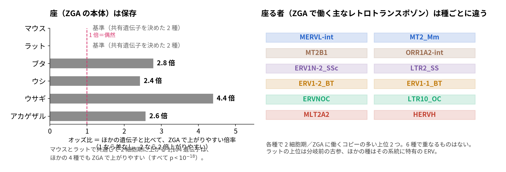

ZGA の本体は保存され、主役のレトロトランスポゾンは種ごとに違う
まず「保存されているもの」と「保存されていないもの」を分けました。ZGA で上がる遺伝子の土台は種を越えて共通でした。2 細胞期にいちばん働くレトロトランスポゾンは、種ごとに別のものでした。


どう解析したか
- マウスとラットの初期胚 RNA-seq（マウス GSE66582、ラット GSE163620）で、2 細胞期に 1 細胞期・卵子の 4 倍以上に上がる遺伝子を各種で選び、1 対 1 で対応する遺伝子（オルソログ）のうち両種で上がる 1,104 遺伝子を「共有 ZGA 遺伝子」とした。共有 ZGA 遺伝子のプロモーターには若い LTR がほとんどない（1% 未満）ので、土台はレトロトランスポゾンに頼っていない。
- ブタ・ウシ・ウサギ・アカゲザルの初期胚データ（Oomen ら 2025）で、共有 ZGA 遺伝子が ZGA の時期に上がる割合を、ほかの遺伝子と比べた（オッズ比）。
- 各種で ZGA の時期にいちばん上がるレトロトランスポゾンの種類を比べた。
座る者
2 細胞期の主役は、マウスとラットで別のもの


名前
このサイトに出てくるレトロトランスポゾン
レトロトランスポゾンは、名前の付いた「種類」ごとに、ゲノムのあちこちに何百〜何千ものコピーがあります。LTR は両端の配列（転写のスイッチ役）、「-int」は中身の本体です。
| 名前 | 何者か | いる種 | 年齢（分岐度） |
|---|---|---|---|
| MERVL（MT2_Mm ＋ MERVL-int） | 今のマウスの主役。MT2_Mm が LTR、MERVL-int が本体 | マウスだけ | とても若い（約 1%） |
| MT2C_Mm | MERVL の一つ前の世代。MERVL はこの家系から生まれた | マウスだけ | 中くらい（約 7%） |
| MT2_Rat1・MT2_Rat2 | ラットで独自に増えた、MERVL に似た LTR（ラットの新参） | ラットだけ | 中くらい（約 7〜10%） |
| MT2B・MT2B1・MT2B2 | MERVL の古い親戚。ラットでは今も主役の古参 | 両種 | 古い（約 10〜21%） |
| MT2A | MERVL の最も古い親戚 | 両種 | とても古い（約 28%） |
| ORR1A2 | ERVL の遠い親戚（MaLR というグループ） | 両種 | 古い（約 10%） |
| RMER6A | 別の系統（ERVK）の古い LTR。2 細胞期に働く古参として一緒に調べた | 両種 | 古い（約 14%） |
年齢は分岐度（元の配列からの違い＝たまった変異の量）の中央値。マウスとラットが分かれたのは分岐度 9〜10% のころにあたります。